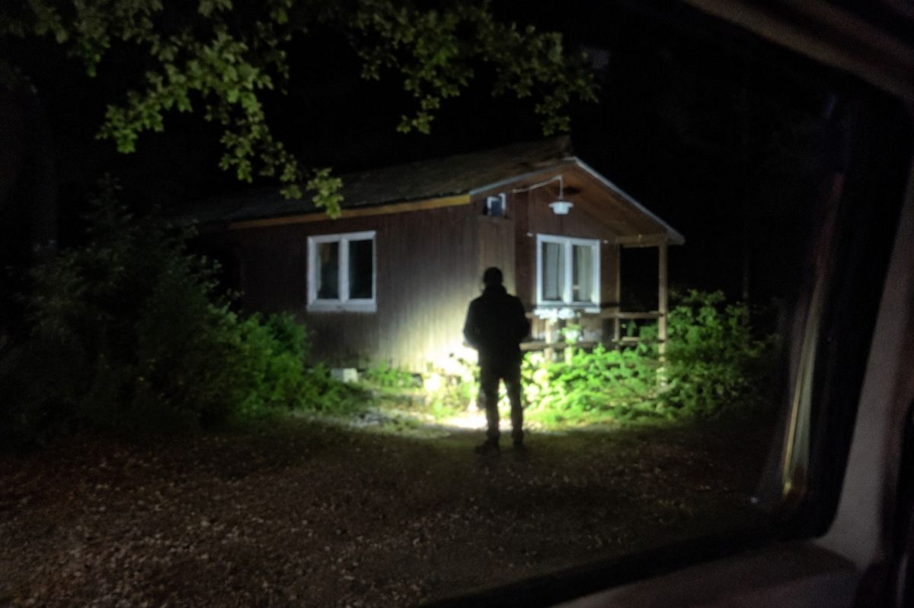
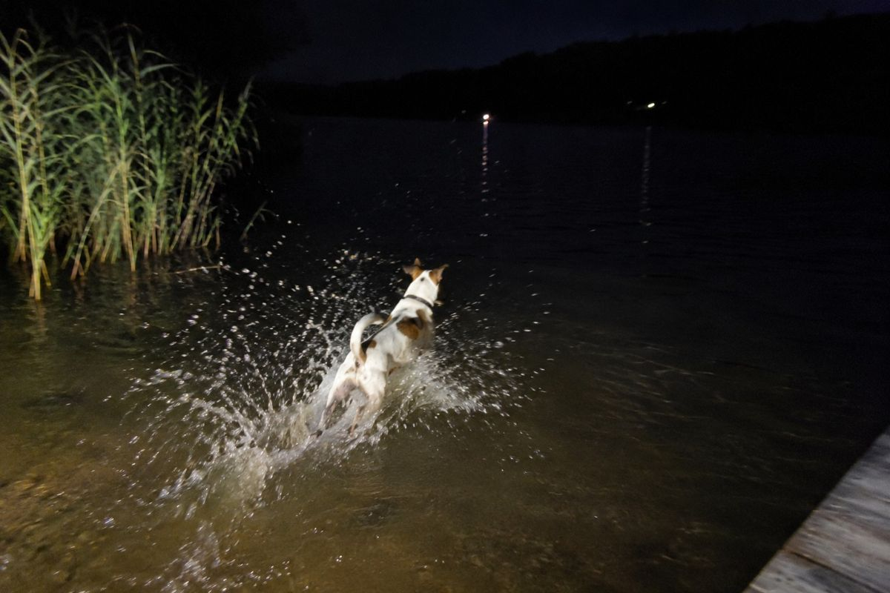
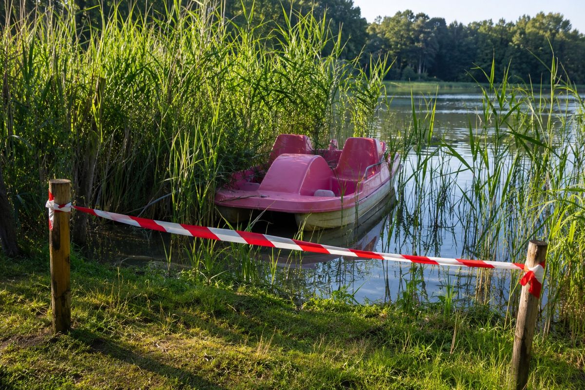
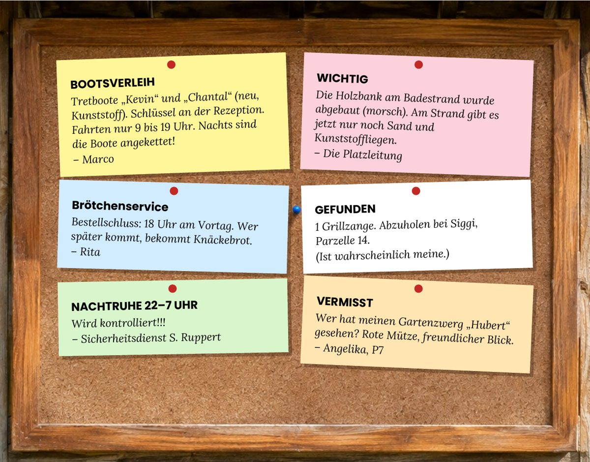
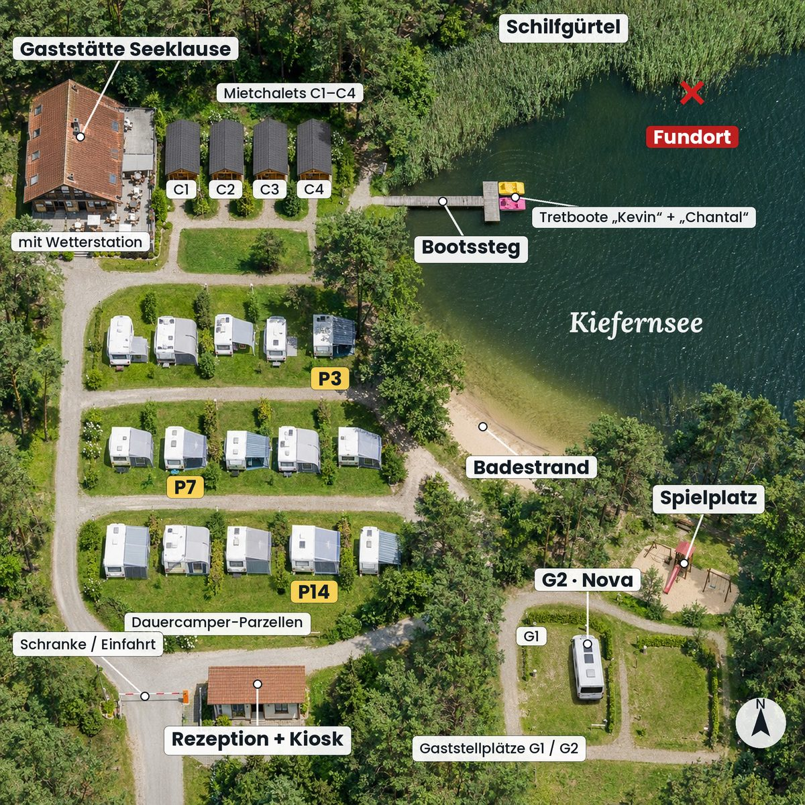

nova.on.wheels · 23:12🌙

nova.on.wheels · 01:28🐶

Das Kennwort steht im Brief von Hauptkommissarin Wendland, ganz unten.
Jeder wählt auf seinem eigenen Handy seine Farbe. Ihr seht dann nur eure eigene Akte – und die gemeinsamen Seiten.
Spielt einer mit dem Buch? Dann wählt der andere hier die Farbe, die im Buch frei bleibt.
Das Buch bleibt eure Hauptakte. Den Ermittlerbogen für euren geheimen Verdacht, die Punkte fürs Duell und die Auflösung gibt es nur im Buch. Legt es beim Spielen immer mit auf den Tisch.
📖 Ermittlerbogen, Punkte und Auflösung findet ihr im Buch.
31 Js 0926/BR
Samstag, 26.09., 06:44 Uhr, Notruf über Leitstelle (Anruferin: Rita Schäfer)
Campingplatz am Kiefernsee, Nordostufer, Schilfgürtel. Wassertiefe ca. 60 cm.
Holger Brandner, 58 J., wohnhaft Frankfurt am Main. Gast in Mietchalet 3.
Leiche in Bauchlage im Flachwasser, unmittelbar neben dem treibenden Tretboot „Chantal“. Bekleidung: Jeans, Hemd, Sakko, Lederslipper.
Platzwunde am Hinterkopf, ca. 4 cm. Keine Abwehrverletzungen.
Dr. A. Okonkwo: Tod durch Ertrinken. Die Kopfverletzung entstand vor dem Eintritt ins Wasser, das Opfer war vermutlich bewusstlos. In der Wunde: mehrere kleine Holzsplitter, Nadelholz, vermutlich Lärche, mit grauer Lasur.
Todeszeitpunkt nach Körpertemperatur: zwischen 22:00 und 2:00 Uhr. Wegen der Wassertemperatur nicht enger bestimmbar.
Kunststoff (PE), Baujahr 2025. Keine Beschädigungen, keine Blut- oder Haaranhaftungen. Die Ankerkette hängt nicht am Boot.
EKHK'in J. Wendland, KK Brüggemann

Vermerk: Bargeld und Kreditkarten vollständig vorhanden. Ein Raubmord erscheint daher unwahrscheinlich. Mietchalet 3 war nicht abgeschlossen, keine Einbruchsspuren.
SICHERHEITSDIENST RUPPERT · Objekt: Camping Kiefernsee · Datum: 25./26.09.
S. Ruppert
F: Frau Schäfer, Sie haben Herrn Brandner gefunden. Erzählen Sie bitte.
A: Um 6:38. Ich fahr jeden Morgen die Brötchen aus, mit dem Lastenrad am Ufer lang. Da seh ich die Chantal im Schilf hängen. Und daneben im Wasser … den Herrn Brandner. Ich hab sofort die 110 angerufen.
F: Ist Ihnen in der Nacht etwas aufgefallen?
A: Ich wohn ja auf Parzelle 3, direkt am Steg. So gegen halb zwei hat's da unten richtig laut PLATSCH gemacht. Ich hab noch gedacht: Jetzt ist einer reingefallen.
F: Sind Sie nachsehen gegangen?
A: Ich hatte schon die Lockenwickler drin. Da geh ich nicht mehr raus.
F: Und vorher, so gegen Mitternacht?
A: Da hab ich geschlafen. Ich schlaf ab zehn. Außer donnerstags, da kommt „Bauer sucht Frau“.
F: Hatte Herr Brandner bei Ihnen Brötchen bestellt?
A: Zwei Laugenbrezeln für Chalet 3. Die liegen jetzt noch in meinem Korb.
Selbst gelesen, genehmigt, unterschrieben:
Rita Schäfer
| Uhrzeit | Temp. °C | Wind aus | km/h |
|---|---|---|---|
| 22:00 | 11,8 | SW | 14 |
| 23:00 | 11,2 | SW | 18 |
| 0:00 | 10,6 | SW | 22 |
| 1:00 | 10,1 | SW | 20 |
| 2:00 | 9,7 | SW | 16 |
| 3:00 | 9,4 | W | 12 |
| 4:00 | 9,0 | W | 9 |
| 5:00 | 8,8 | W | 6 |
| 6:00 | 8,6 | W | 5 |
Niederschlag: 0 mm. Hinweis Wetterdienst: Ein Wind aus Südwest (SW) weht nach Nordosten.
LEITSTELLE SEEBRÜCK · Notruf Sa 26.09., 06:44:12 Uhr · Anruferin: Rita Schäfer · Dauer 0:21
Leitstelle: Notruf Leitstelle Seebrück. Wo genau ist der Notfallort?
Anruferin: Hier ist die Rita vom Kiefernsee! Da liegt einer im Wasser, beim Schilf, das ist der Herr Brandner. Der bewegt sich nicht! Das Tretboot ist auch da, die Chantal. Bitte kommen Sie schnell!
Leitstelle: Bleiben Sie, wo Sie sind, und gehen Sie nicht ins Wasser. Rettungswagen und Polizei sind unterwegs.
06:45 Uhr: Rettungswagen und Streife alarmiert.
Gaststätte Seeklause, Freitag, 25.09., 19:00 bis 21:30 Uhr
31 Dauercamper, Platzbetreiber Mark Böttcher, Herr Holger Brandner (Brandner Freizeit & Resort GmbH), Hausmeister Marco Lenz, Sicherheitsdienst Sven Ruppert (am Eingang), Frau Nova Sommer (Gast)
Begrüßung durch Herrn Böttcher. Er möchte „mit 61 nicht mehr jeden Morgen Rasen mähen und Beschwerden lesen“.
Herr Brandner stellt das „Kiefernsee Glamping Resort“ vor: 40 Safarizelte, ein Saunafloß, die Dauerparzellen enden am 31.12.2027. Er holt den Vorvertrag aus seiner roten Ledermappe und sagt: „Hier fehlt nur noch eine Unterschrift.“
Aussprache, sehr lebhaft. Herr Kowalski: „Nur über meinen Grill.“ Frau Sommer fragt, ob es im Resort Steckdosen für Vans gibt. Herr Lenz fragt, ob das Personal übernommen wird. Herr Brandner: „Wir bringen unser eigenes Team mit.“ Herr Lenz verlässt kurz den Raum.
Abstimmung (nicht bindend): 0 dafür, 31 dagegen, 1 Enthaltung (Herr Ruppert, „aus dienstlichen Gründen neutral“).
21:30 Uhr. Herr Brandner verabschiedet sich mit der roten Mappe unter dem Arm: „Ich bin noch bis Sonntag in Chalet 3. Meine Tür steht offen.“
Die Bowle war zu süß.
A. Wohlfahrt
Angelika Wohlfahrt, Schriftführerin
Steg ist frisch lasiert. Lärche, grau. Bis Freitagabend bitte NICHT betreten!! Auch nicht „nur kurz“, Siggi.
Das mit den Fußspuren letztes Jahr war ich nicht.
Doch.
Erinnerung: Heute 19 Uhr Versammlung in der Seeklause. Thema: Herr Brandner und seine „Glamping-Pläne“. Bitte zahlreich erscheinen!
Ich bring meinen Grill mit. Als Argument.
Habt ihr gesehen, wie der seine rote Mappe festhält? Wie ein Baby.
Da ist der Vorvertrag drin. Wenn Mark unterschreibt, sind wir Ende 2027 alle weg.
Leute, ich hab noch nichts unterschrieben. Schlaft drüber. Ich auch.
Erinnerung: Ab 22 Uhr ist Nachtruhe. Parzelle 14, ich hör den Schlager bis zur Schranke.
Das ist Kultur.
POLIZEI IST SCHON DA. Am Schilf. Der Herr Brandner. Oh Gott.
Was ist passiert??
Bitte alle auf euren Parzellen bleiben. Die Polizei will mit jedem sprechen.
Das Handy von Holger Brandner war nass, ließ sich aber auslesen. Die letzte Aktivität vor dem Tod ist eine Sprachnachricht an seinen Anwalt. Ihr dürft sie Akte Rot vorspielen.
„Kessler, ich bin's. Die Versammlung war ein Zirkus, aber egal. Ich geh gleich noch runter zum Steg. Da will mir jemand was zeigen. Angeblich was über den Platz, das den Preis ordentlich drückt. Wenn das stimmt, unterschreibt Böttcher am Montag zu unseren Bedingungen. Ruf mich morgen früh an.“
Frau Sommer postet fast jeden Abend eine „Story“ – kurze Fotos, die nach 24 Stunden wieder verschwinden. Wir haben sie vorher gesichert.
Aussage Nova Sommer, Samstag, 8:15 Uhr: „Ich mach jeden Abend ein paar Storys, das ist mein Job. Was drauf ist, sehen Sie ja selbst. Den Herrn Brandner fand ich ehrlich gesagt ganz okay. Er hat mir gesagt, für Vans gibt's im Resort eine Sonderspur.“


Schaut genau hin: Uhrzeit, Ort, Licht, was passiert. Beschreibt es Akte Rot.

Tretboote „Kevin“ und „Chantal“ (neu, Kunststoff). Schlüssel an der Rezeption. Fahrten nur 9 bis 19 Uhr. Nachts sind die Boote angekettet!
– Marco
Die Holzbank am Badestrand wurde abgebaut (morsch). Am Strand gibt es jetzt nur noch Sand und Kunststoffliegen.
– Die Platzleitung
Bestellschluss: 18 Uhr am Vortag. Wer später kommt, bekommt Knäckebrot.
– Rita
1 Grillzange. Abzuholen bei Siggi, Parzelle 14.
(Ist wahrscheinlich meine.)
Wird kontrolliert!!!
– Sicherheitsdienst S. Ruppert
Wer hat meinen Gartenzwerg „Hubert“ gesehen? Rote Mütze, freundlicher Blick.
– Angelika, P7

Rita Schäfer wohnt auf Parzelle 3, gleich oberhalb vom Steg. Nova Sommer steht mit ihrem Van auf G2. Die Wetterstation hängt an der Gaststätte Seeklause.
Das Opfer. Projektentwickler, „Brandner Freizeit & Resort GmbH“. Wollte den Platz kaufen. Wohnte übers Wochenende in Mietchalet 3.
Platzbetreiber. Will verkaufen: „Ich mäh seit 30 Jahren Rasen und lese Beschwerden.“
Dauercamperin seit 1998, Parzelle 7. Sprecherin der Dauercamper und Schriftführerin. Weiß alles über jeden.
Dauercamper, Parzelle 14. Grillmeister, Schlagerfan, Gegner jeder Veränderung.
Hausmeister. Repariert alles, streicht alles, hat Schlüssel für alles.
Sicherheitsdienst. Nimmt die Nachtruhe sehr, sehr ernst.
Gast mit Van auf Stellplatz G2. Vanlife-Influencerin (@nova.on.wheels), reist mit Hund Pepper.
Kiosk und Brötchendienst, Parzelle 3 direkt am Steg. Hat den Toten gefunden.
Lieber auf Papier? Im Buch auf Seite 19 steht, wie ihr die Abschnittsnummer selbst berechnet.
Stufe 1 gibt einen Schubs, Stufe 2 die Richtung, Stufe 3 die Antwort. Jede geöffnete Stufe kostet euer Team einen Punkt.